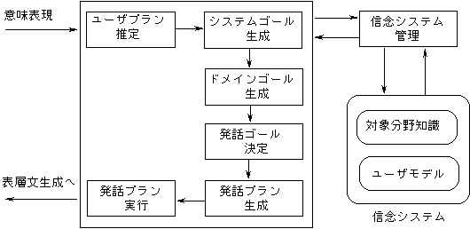

（４８）語用論的発話選択機構を持つ対話実験システム
マ シ ン：PSI
環 境：SIMPOS
言 語：ESP
ソース量：1.0 MB
文 書：マニュアル (日本語／英語)
概要
目的指向型対話において、ユーザへ協調的な応答を行う上で必要な条件をあき
らかにするための実験システムである。
構成

機能
旅行中に発生したトラブルの場面を想定し、対話の進行に伴って変化する話題
や、ユーザの状態などの語用論的な制約に応じて発話の内容を選択することに
より、ユーザの目的の達成を支援する応答を作成する。
特徴
- ユーザが望む状態を達成するためのプランニングの問題として発話の生成
を扱う。
- 発話を選択する基準を評価関数として表現し、これを用いて、可能な発話
(質問、提案、説明など) の中から状況に応じた応答を選択する。
- 複数の文からなる応答文を生成する際、評価関数を用いて文章構造を決定
する。
- ユーザモデルを参照しながら発話のプランニングを行うことにより、ユー
ザの知識に応じた応答やユーザの前提知識の誤りを解消する応答を生成するこ
とができる。
ＦＴＰ
- 語用論的発話選択機構を持つ対話実験システム [550K]

www-admin@icot.or.jp